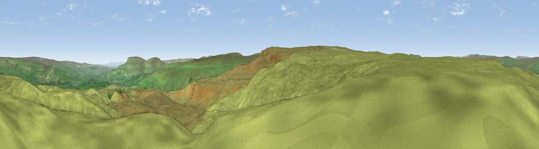

Viewpoint near Bainbridge
#16716 in England · top 40% of its area beats it · near BainbridgeThe view, rendered

A 360° render of this exact spot computed from the terrain model, tree cover and land cover — summer colours, afternoon light, calibrated against photographs of famous viewpoints. Real trees, hedges and buildings will differ in detail.
The panorama
Grey silhouette: terrain skyline in each direction (720 bearings, Earth curvature and refraction included). Dashed green: skyline with trees (+15 m) and buildings (+8 m) as obstacles. Blue strip: how far the ground is visible on each bearing.
Where the view opens
Wedge length = distance to the farthest visible ground on that bearing (vegetation-aware). Rings at 10, 25 and 50 km.
What fills the view
99% grassland · 1% woodland
Angular shares of the visible panorama (visual magnitude), not map area. Landscape diversity 0.03 (0–1 Shannon).
Key numbers
More beautiful places nearby
The staircase of upgrades: each row has a higher view potential than everything closer. Driving times are estimates from straight-line distance, calibrated against real road routing — check an actual route before setting out.
| Place | Direction | Drive | Score |
|---|---|---|---|
| Stake Fell | NNW · 0 km | ~1 min | 58.9 |
| Viewpoint near Aysgarth | S · 1 km | ~3 min | 64.5 |
| Naughtberry Hill | SSE · 5 km | ~10 min | 69.7 |
| Viewpoint near Askrigg | N · 7 km | ~14 min | 69.9 |
| Viewpoint near Buckden | S · 7 km | ~15 min | 77.3 |
| Viewpoint near East Witton | E · 18 km | ~31 min | 77.8 |
| Whernside | WSW · 22 km | ~37 min | 79.9 |
| Warton Crag | WSW · 48 km | ~69 min | 83.2 |
54.26986, -2.06407 · source: screening · position refined by local search. Computed location — check access rights before visiting.